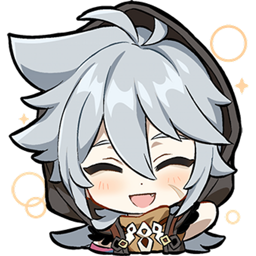

R A Z O R
Razor es un personaje perteneciente a Genshin Impact, videojuego de la compañía Hoyoverse. Él ronda entre los 13 y 14 años, criado por los lobos del bosque. Bajo el cuidado de Lupus Boreas, Lobo del Viento del Norte o simplemente Andrius, Razor desarrolla una gran capacidad de supervivencia y a lo largo de la historia se observa que posee una increíble inteligencia al esforzarse por aprender el lenguaje humano tras años apartado de la sociedad.
Un chico criado por lobos
Es un chico de cabello grisáceo, ojos rojo sangre, ojeras oscuras y una cicatriz de la mejilla. Su vestimenta consiste en una suéter sin mangas color marrón; una camiseta suelta con cuello de torturga de color naranja que hace contrastar enormemente el collar de dientes que lleva; viste un pantalón ancho de color verde oscuro con las orillas metidas en unas botas desgastadas de color café oscuro. En su piel nívea se puede observar no solo heridas, sino que igual tienen símbolos que lo rodean.

Razor es huérfano. Se desconoce la razón por la que terminó en el reino de los Lobos bajo el cuidado
del Viento del Norte, pero este tipo de vida le ha permitido tener una personalidad amable y empática
con los animales pues ha estado en contacto directo con ellos.
Su cumpleaños es el 9 de septiembre y la constelación que los representa es la de Lupus Minor, mismo
nombre que lleva su misión legendaria donde se conoce mejor a este personaje.
El 29 de septiembre del 2022 el juego lanzó la actualización 3.1 donde entre sus eventos
principales,
uno estuvo dedicado a lo que Razor llama como Lupical. En ella ayudamos a nuestro personaje a recrear
un vino hecho por sus padres. Hasta el momento se desconocía tanto cómo eran como a qué se dedicaban.
En este evento llamado "Cantar de Copas" una cinemática nos muestra a los padres de Razor.Ambos se les
observaba en un acantilado donde una luna inmensa los engloba, están vestidos de aventureros y hablan
sobre su hijo, al que planean llamar Razor porque es un gran nombre de aventurero. Este evento termina
con un panorama de todos los amigos que Razor ha hecho, entre ellos Bennett, Klee, Lisa y el
protagonista
del videojuego.
Razor siempre se sintió en un limbo, esto lo descubrimos en las líneas de voz del personaje,
donde
nos expresa que aunque se comporta como un lobo, no se ve como uno; asímismo, se ve como humano pero no
se
comporta como uno. En una de sus seis historia nos describen la discriminación que recibió en un pasado
y
que solo acentaron más esta inseguridad sobre su identidad. A pesar de esto, se esfuerza por aprender a
hablar y valoró el esfuerzo de Varka por enseñarle a empuñar una mandoble, el arma que maneja.
Una parte importante de Razor es su Lupical, tanto por lobos como por personas, entre ellas se
encuentran: